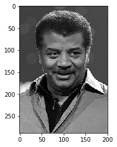

Elon Musk vs Neil Degrasse Tyson Image Classifier Using Tensorflow

As part of my quest to learn Deep Learning, I wanted to make a classifier for images. One of the very first tutorials in Deep Learning that one will come across is a Cats vs Dogs classifier. So obviously I decided to implement it, except for one change. But since I am a big fan of Elon Musk and Neil deGrasse Tyson I decided to make the classifier of the two.
However, I realised that the biggest challenge was acquiring the dataset.
First, unlike the Cats vs Dogs dataset which has around 25,000 images, there is no dataset available for Elon Musk and Neil deGrasse Tyson. So I decided to gather my own dataset from Google images. For this, I installed a plugin for Chrome to download the images. But each time Chrome ended up crashing. I had to look for some other strategy. After a bit of searching, I found a Python script which could download the images I needed.
Now I hit the second challenge. Though there are adequate images available of Neil deGrasse Tyson, not so of Elon Musk. A continuous scroll down on Google images will exhaust the result. And I did not want to skew the dataset by having Neil's images outnumbering Elon's.
So, I was left with merely about 400 images of each. Any effective classifier would need a lot more than that. When I started training my model, it started to get an accuracy of 1 on the training data and a low score on the validation set. The only way to improve the model was to gather more data. But, with the limited images available, getting more images was not an option.
Data Augnemtation. Here comes data augmentation. It is a method to increase the data size. When working with images, new data can be created by scaling, rotating, cropping, adding noise and flipping them. Thus, increasing the size of the dataset. (You can read more about data augmentation here). So, I flipped the images around the y-axis. Now, I had ~800 images of each thus doubling my dataset!
With this, I again started to train my classifier.
Aaaanndd…………nope! Still no improvement!
I was missing something. So, here is something — if you have a lot of images of cats and some of them have cats only as a small part of the image, it will not be an issue for the neural network. However, when the dataset is small this can be a significant issue. In my classifier, both Elon and Neil weren't the only ones in the image. And, with flipping and adding another data point, I now had two sets of images with other people in them as well. I had only one option. To manually crop the original images. Sorry, Amber and Grimes.
Finally, with the batch size 10 and 5 epochs, I got the validation accuracy of 80%.
You can grab the code here
Thanks for reading